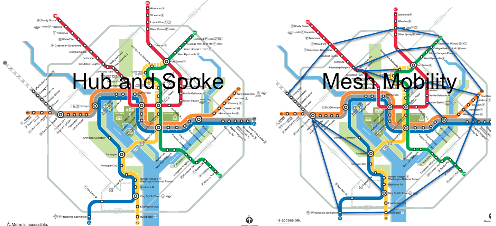
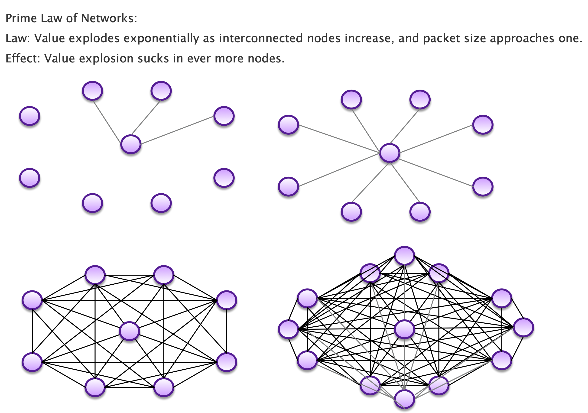
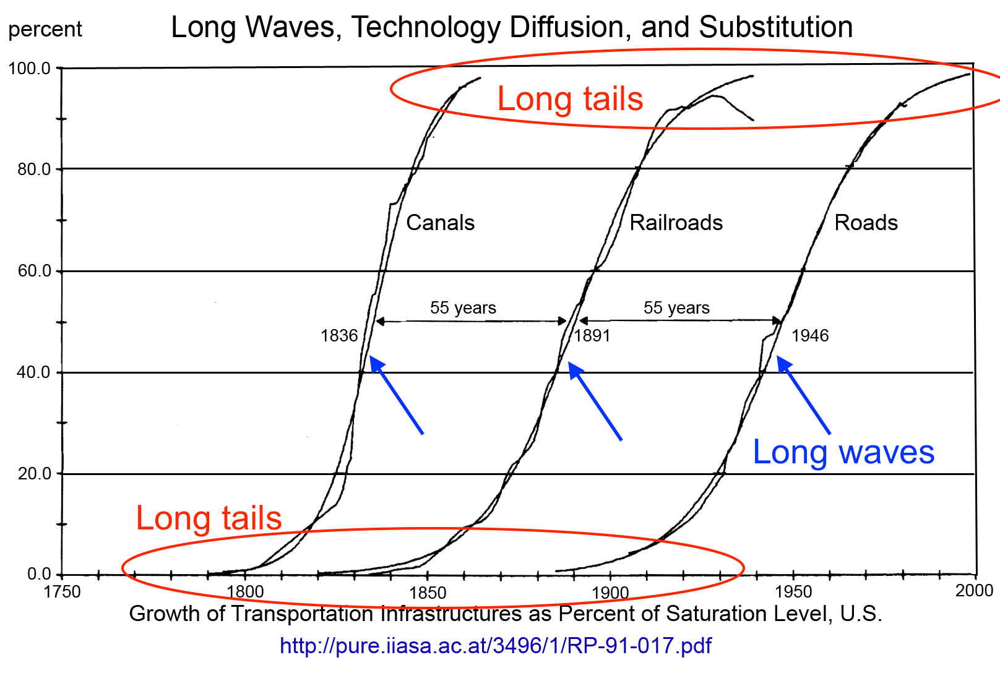
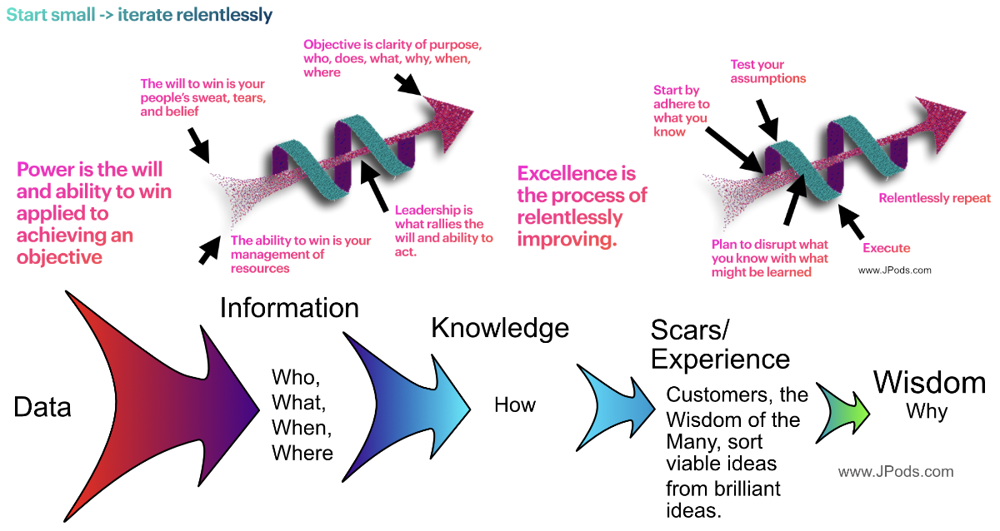
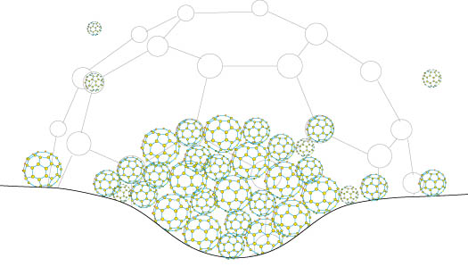

Why small packets, more connections, and relentless iteration always win.
Value grows as the square of connected nodes (n) and inversely with packet size (p). Drive p toward 1 and value explodes.
Every major transit system is hub-and-spoke. All lines converge downtown. Want to cross town? Ride to the center and back out. The hub is a bottleneck. The spokes are captive. Most origin-destination pairs require multiple transfers through the most congested point in the system.

Network value increases exponentially as the number of interconnected nodes increases and the packet size is driven toward one.

Every new node connects to every existing node. 7 nodes = 21 connections. 16 nodes = 120 connections. Double the nodes, quadruple the value. This is Metcalfe's Law — proven by telephones, fax machines, the internet, and social networks.
Physical networks have a constraint information networks don't: mass. A highway moves 2-ton packets. A bus batches 40 people into 20-ton packets. The larger the packet, the more you need schedules, fixed routes, and batching — which means most origin-destination pairs can't be served. Drive packet size toward 1 and every O-D pair becomes possible.
Every transportation infrastructure follows the same pattern: long tail, explosive growth, saturation. The waves come every 55 years. Canals (1836), Railroads (1891), Roads (1946). The next wave is due.

The internet won by routing small packets dynamically instead of dedicating circuits. JPods does the same thing to physical transportation. Circuit-switching lost to packet-switching. Scheduled transit will lose to on-demand pods.
The internet and personal rapid transit were both invented in the same era. Both required a century to break through government monopolies. One succeeded in 1982. The other is still waiting.
1918: Executive Order monopolized communications.
1982: Federal courts declared the monopoly unconstitutional.
Result: The internet went commercial. In 25 years, more value was created than in all prior history of communications.
1916: Federal-Aid Highway Act removed efficiency as a market force.
1936: Rural Electrification Act killed 600,000 windmills.
2026: Still waiting.
Cost: Climate change. Oil wars since 1991. $6.4 trillion in Iraq/Afghanistan. 1.8 million highway deaths.
The Boston Tea Party and the Revolutionary War led the Framers to forbid the Federal government from repeating the King's transportation monopoly. Article I, Section 8 reserves internal improvements to the states. The Federal-Aid Highway Act of 1916 violated this principle. The 5X5 Standard restores it — privately funded networks, state-governed, 5x more efficient than roads, for 5% of gross revenues.
The Boston Tea Party was a non-violent demonstration against the general government's mercantile transportation monopoly that triggered a war. To prevent rebuilding that path to war, the Framers voted 8 states to 3 to forbid federal highways, canals, and other “internal improvements” that might mix federal war-powers with commercial self-interest. Oil wars in Iraq and Afghanistan caused by federal highway foreign oil addiction underscore the wisdom of the Divided Sovereignty of the Constitution. The Framers understood that whether monopolies are created by nobility or levelers (their words for right and left), the same defect of government central planning undermines the Wisdom of the Many. The 1916 Highway Act and the 1936 Rural Electrification Act were progressive programs. Today, conservatives defend them while attacking the free-market renewables and transit alternatives that would replace them. The defect is structural, not partisan. Central planning overrides the sorting mechanism — customers choosing, innovators competing, bad ideas failing fast — that networks require to find value. The violent opposition of left and right obscures what they share: both hire the same bureaucratic personalities to manage the mercantile monopolies they want. The bureaucratic personality is loyal to the institution, not the mission — optimizing for the system's survival rather than its customers. This is why government monopolies all decay the same way regardless of which side created them. A bureaucracy is a single node that all traffic must pass through. Hub-and-spoke with one hub. n² collapses to n×1. The value destruction is structural, not ideological. Restore the liberty to innovate and the Wisdom of the Many will drive the S-curve.
At Kitty Hawk, the Wright Brothers flew 120 feet and changed the world. They changed the world because liberty to innovate was amplified by the Wisdom of the Many implementing the Prime Law of Networks. You don't build a network all at once. You start with a few nodes, prove value, and let n² do the recruiting. Each new node makes every existing node more valuable. The S-curve isn't planned — it's triggered.

One working JPods network in one city. Measurable savings. Visible pods moving above the street. That's the first node. The second city sees it working and asks for one. Now you have two nodes and four connections worth of political proof. By the fifth city, the S-curve is underway.
Once a network reaches critical mass, value pulls in new members faster than you can build for them. This is the gravity well effect — the network's own value becomes the sales force. Telephones did it. The internet did it. Social media did it. Physical transit networks will do it when packet size drops low enough.

JPods is the only transit system designed from the Prime Law. Every design choice drives p toward 1 and maximizes n.
Highways move 2-ton packets on schedules set by traffic. Buses batch 40 people into 20-ton packets on fixed routes. Trains batch hundreds into 100-ton packets on steel rails. JPods moves 500-kilogram packets on-demand to any destination on the network. That is the difference between circuit-switching and packet-switching applied to physical movement.
JPods is the Middle-Mile solution — station to station, neighborhood to neighborhood. Solar-powered guideways above the streets. About 1 mile of JPods guideways per 14 miles of roads. The network that makes everything else reachable.
Walking. Bikes. Scooters. Uber. Local Use Vehicles (golf carts). Proximity itself — when stations are close enough, the last mile disappears. JPods doesn't compete with last-mile modes. It enables them. Station placement is correct when any point in the city is bikeable in 7 minutes or walkable in 15.
Every industry that shifted from large batches to small packets saw the same S-curve explosion.
Before: Mainframes → dedicated circuits → batch processing.
After: PCs → packet-switching → the internet.
Result: More value created in 30 years than in all prior history.
Before: Department stores → big inventory → fixed locations.
After: E-commerce → single items → any address.
Result: Amazon ships individual items to every doorstep. Packet size = 1.
Before: Central power plants → massive generation → long transmission.
After: Solar panels → distributed generation → local consumption.
Result: Energy packet size approaching one rooftop.
Before: Trains → buses → highways → schedules → fixed routes.
After: JPods → 500 kg pods → on-demand → any O-D pair.
Result: The next S-curve. Due since 2001.
Run the Prime Law on your city. See what happens when packet size drops to 500 kg and every node connects to every other node.